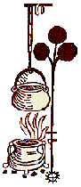
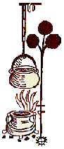

|
For to make Buknade PERIOD: England, 1500 | SOURCE: A noble boke of festes ryalle and Cokery | CLASS: Authentic DESCRIPTION: A dish of veal and eggs
ORIGINAL RECEIPT: For to make Buknade. To make Buknadet take vele smalle chopped & vele perboylled: than gader up the flesshe and clense the brothe through a streyner & putte it in a pot & sette it on the fyre & put therto onyons mynced and pouder of peper pouder of clowes & canell & whan it boyleth put in the flesshe: than take rawe yolkes of egges in a bolle & caste therto of the hote brothe & medle it well togider and in the settynge dowe put in the eggis & styre it togyder and gyue it a lytell colour of saffron and salte it and serue it. - A noble boke of festes ryalle and Cokery. London: Richard Pynson, 1500.
GODE COOKERY TRANSLATION: For to make Buknade. To make Buknade take veal small chopped & veal parboiled: then gather up the flesh and cleanse the broth through a strainer & put it in a pot & set it on the fire & put thereto onions minced and powder of pepper powder of cloves & cinnamon & when it boils put in the flesh: then take raw egg yolks in a bowl & cast thereto of the hot broth & mix it well together and in the setting down put in the eggs & stir it together and give it a little colour of saffron and salt it and serve it.
INGREDIENTS:
Mince or chop the veal; place in a large soup pot, cover with water, & bring to a boil. Reduce heat & cook until the veal is tender, skimming off any scum that will rise to the surface. Remove the veal from the broth; strain the broth and return it to the pot. Return the broth to a boil; add the onions & spices. Bring back to a boil, then add the veal. Reduce heat to a simmer. In a separate bowl, beat the eggs. Add some of the hot broth and beat well together. Stir this mixture into the buknade until it is completely blended. Colour it with a little saffron and salt to taste. Serve. Buknade - "A stew of variable flesh, veal being most usual.... the root buk of the title signifies the meaning of 'veal dish,' as in the well-known modern Italian veal shank dish, osso bucco." From Curye on Inglish, p. 175. (Hieatt, Constance B. and Sharon Butler. Curye on Inglish: English Culinary Manuscripts of the Fourteenth-Century (Including the Forme of Cury). New York: for The Early English Text Society by the Oxford University Press, 1985.) |

 A
Boke of Gode Cookery
A
Boke of Gode Cookery Medieval
Recipe Translations
Medieval
Recipe Translations
For to make Buknade © 2003 James L. Matterer
 Medieval
Recipe Translations
Medieval
Recipe Translations
ALL
GODE COOKERY RECIPES
Please visit The Gode Cookery Bookshop | This site hosted by Visual Presence